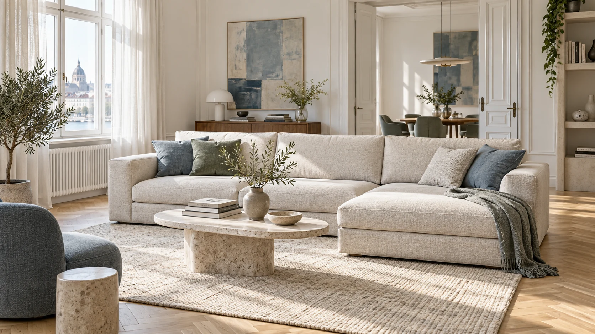
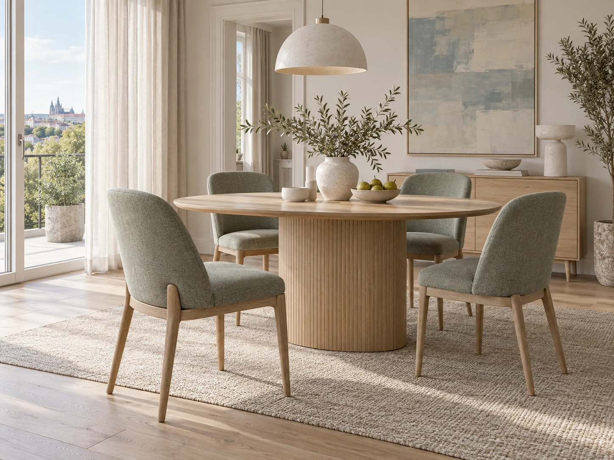
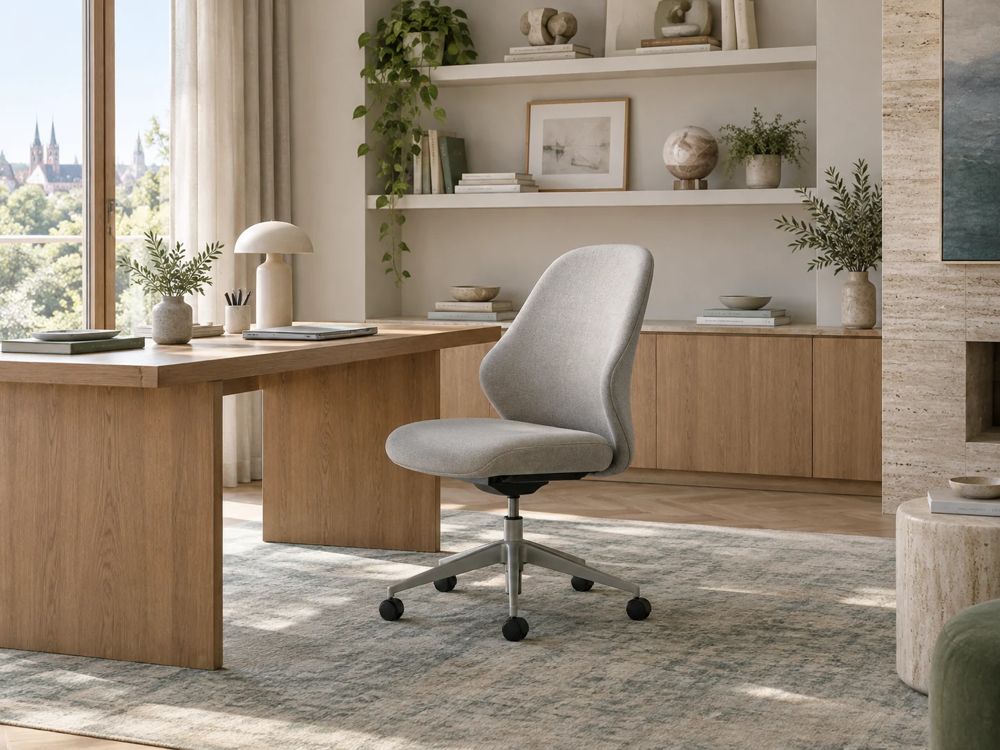
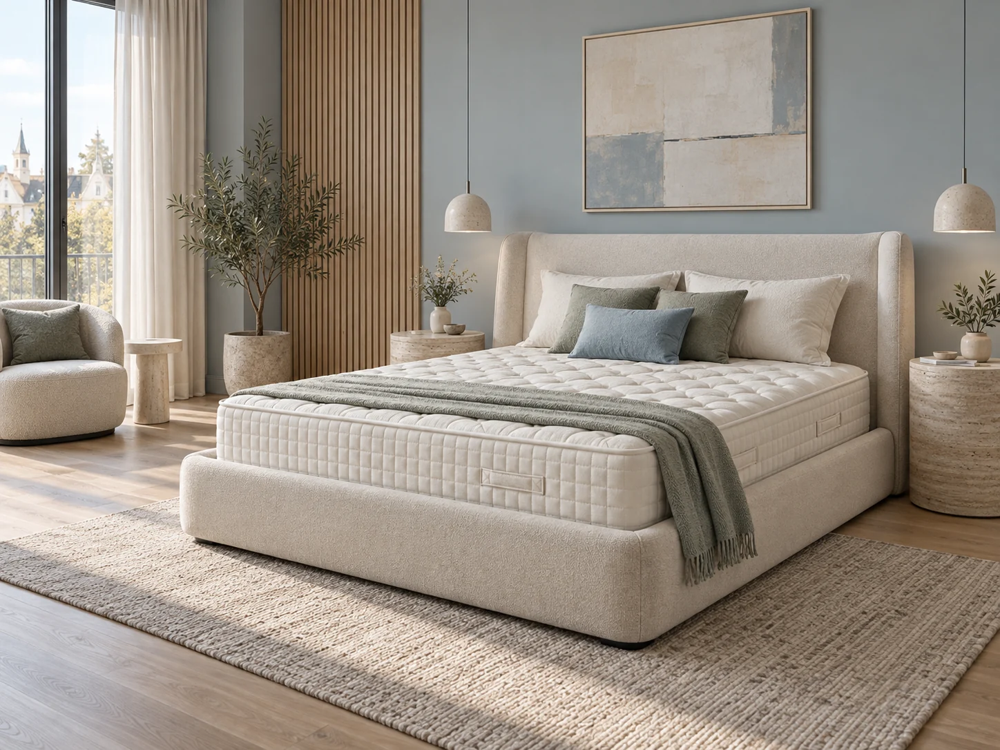
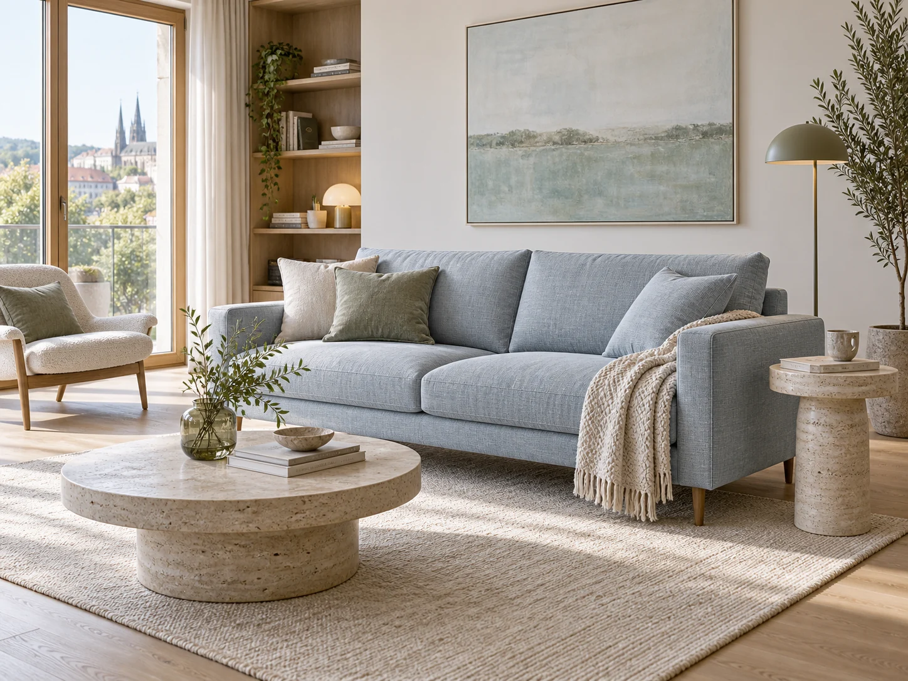
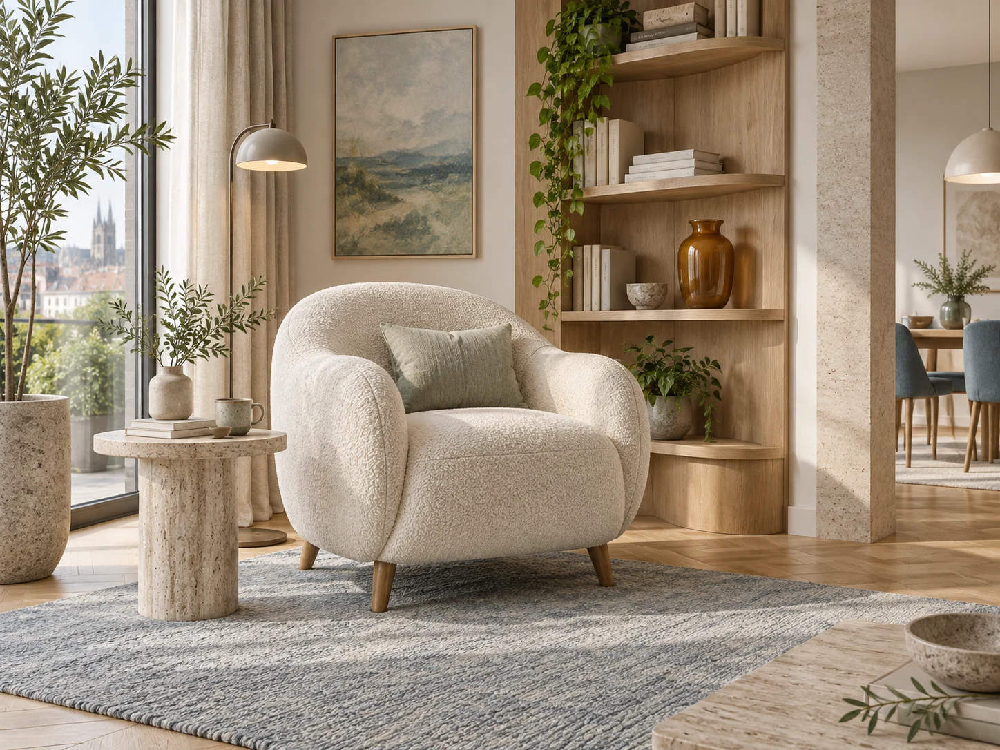
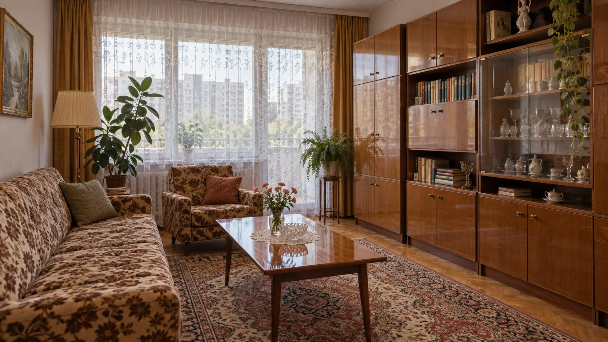
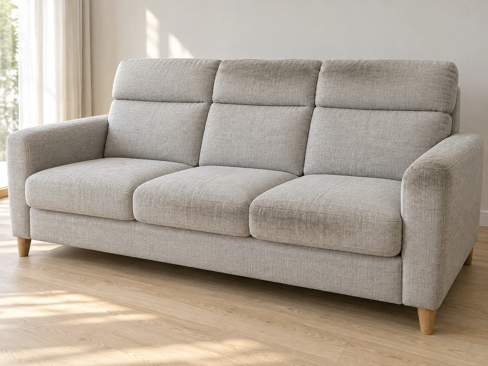
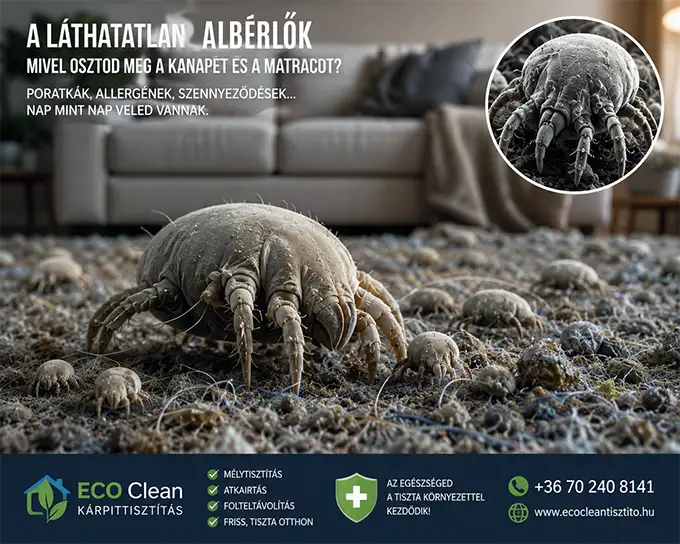

01
Kanapé és ülőgarnitúra
A családi esték központja, ahol naponta sokféle használat nyoma találkozik. Az ülőfelület mellett a karfák, a háttámlák és az elemek közötti rések állapotára is érdemes figyelni.
Tisztítás megtervezéseNe csak tisztítsd, újítsd meg bútoraidat! A legmodernebb ipari extrakciós technológia és 100% vegyszermentes bio-tisztítás találkozása. Komárom és vonzáskörzetének vezető atkamentesítő szolgáltatása – azonnali száradási idővel.

A kanapé esti pihenése, a közös étkezések vagy a nyugodt alvás: válassz egy helyiséget, és nézd meg közelebbről a naponta használt kárpitozott felületeket.
A kanapé háttámlája, karfája és ülőfelülete eltérően kap terhelést. A tisztításnál a teljes bútort és az anyag kezelési előírását nézzük.
Kiválasztom a bútort
Az étkezőszék szövete a mindennapi étkezésekből is őrizhet nyomokat. A darabszám és a kárpitozott felületek mérete együtt fontos.
Kiválasztom a bútort
Az irodai szék ülőlapja és háttámlája rendszeres használatban van. Az ápolt kárpit a rendezett munkakörnyezet része.
Kiválasztom a bútort
A matrac méretét és tisztítandó oldalait is válaszd ki. A huzat és a belső felépítés határozza meg a megfelelő eljárást.
Kiválasztom a bútortSaját generált enteriőr-illusztrációk; a valódi tisztítási eredményeket az eredeti referenciafotók mutatják.
A bútor formája csak az első támpont. Az anyaga, a kialakítása, a használata és a korábbi foltkezelések együtt határozzák meg, milyen tisztítás lehet megfelelő. Válaszd ki, melyik darabodról szeretnél gondoskodni.
A családi esték központja, ahol naponta sokféle használat nyoma találkozik. Az ülőfelület mellett a karfák, a háttámlák és az elemek közötti rések állapotára is érdemes figyelni.
Tisztítás megtervezése
Egy elegáns kétszemélyes szófa vagy vendégágyként is használt heverő más-más igényt jelenthet. A fekvőfelületet és a kinyitható részeket is mutasd meg az egyeztetéskor.
Tisztítás megtervezése
A kedvenc pihenőhelyen gyakran ugyanazt a fejtámlát és könyöklőt használjuk. A jól körülhatárolható, terheltebb részek külön figyelmet kérnek, különösen világos vagy finom tapintású kárpitnál.
Tisztítás megtervezéseReggelik, vendégségek, hosszú beszélgetések: az étkezőszéken morzsák, ital- és ételfoltok is megjelenhetnek. A háttámla és az ülőlap tisztítási igénye eltérhet, ezért mindkettőt érdemes számba venni.
Tisztítás megtervezéseA munkanapok alatt órákon át érintkezünk az ülőlappal és a háttámlával. Az otthoni dolgozósarok szövetborítású széke ugyanúgy rendszeres gondoskodást igényel, mint a nappali bútorai.
Tisztítás megtervezéseA huzat alatt és körül is érdemes figyelni a tisztaságra. A matrac típusa, mérete, oldalszáma és kezelési előírása mellett az ágyvég vagy kárpitozott keret állapotát is vedd számításba.
Tisztítás megtervezéseA bútorok képei generált enteriőr-illusztrációk. Az anyag tisztíthatóságát mindig egyedileg egyeztetjük.
A minőségnek ára van, az egészségnek értéke. Pontos árajánlatért keress minket!
mélytisztítás + fertőtlenítés
választható + ATKAIRTÁS 4000 Ft
mélytisztítás + fertőtlenítés
választható + ATKAIRTÁS 4000 Ft
mélytisztítás + fertőtlenítés
választható + ATKAIRTÁS 6000 Ft
mélytisztítás + fertőtlenítés
szövet függvénye
darabszám kedvezmény!
Fontos információ ANDANTE bútorok tisztításával kapcsolatban
Az ANDANTE bútorok egy részénél speciális, impregnált vagy vízre érzékeny szövet kerül felhasználásra, amely extrakciós kárpittisztító technológiával nem tisztítható biztonságosan.
Kérjük, hogy megrendelés előtt minden esetben ellenőrizd a bútor szövetének típusát és tisztíthatóságát. Amennyiben a helyszínen derül ki, hogy a bútor anyaga az alkalmazott technológiával nem tisztítható, a lefoglalt időpont és kiszállás kiesése miatt a szolgáltatás díjának 50%-a kapacitás-foglalási díjként felszámításra kerülhet.
Köszönjük megértésed!
Mutass egy közeli fotót, és megpróbáljuk felismerni az ANDANTE NovaLife-ra vagy hasonló bevonatra utaló jeleket, miközben az anyag jellegéről is támpontot adunk. Ha a képből nem dönthető el, a kezelési címke vagy egy újabb részletfotó segíthet.

A fotó előzetes kockázatszűréshez ad támpontot. Az ANDANTE NovaLife hiányát, a szálösszetételt és a tisztíthatóságot önmagában nem igazolja.
Fotózd a kárpitot 10–20 cm-ről, természetes fényben, vagy válaszd a bútor kezelési címkéjét.
Válassz egy közeli fotót.
Húzd ide a képet, vagy válassz a fotóid közül.
Az anyagreferencia-gyűjtemény elérhetőségét ellenőrizzük.
Válassz egy fotót a kezdéshez.
A kép kiválasztásakor csak helyi előnézet készül. Az „Elemzés indítása” gombbal a kicsinyített fotót és megjegyzést az ECO Clean kiszolgálóján keresztül külső képfeldolgozó szolgáltatáshoz küldöd, fotóalapú anyagbecsléshez. Ha külön hozzájárulsz, az ECO Clean az előkészített JPEG-fotót privát felhőtárhelyen is megőrzi, és saját számítógépére szinkronizálhatja, kézi szakmai ellenőrzéshez és besoroláshoz. Szakmai jóváhagyás után a fotót későbbi elemzéseknél összehasonlítási mintaként külső képfeldolgozó szolgáltatásnak is átadhatja. Hozzájárulás nélkül nem kerül fotó a referenciagyűjteménybe. A fotókat nem tesszük nyilvánosan közzé. A fotón lehetőleg csak a szövet vagy a kezelési címke szerepeljen.
Állítsd össze a tételeket, nézd meg a tájékoztató összeget, majd ellenőrizd és vidd át a választásodat a megrendelő űrlapra. Az időpontot és az elérhetőségeket ott adhatod meg.
Emlékszel a fényes szekrénysorra, a mintás fotelre, a kihúzható heverőre és a csipkefüggönyön átszűrődő délutáni fényre? A szocialista korszak sok magyar otthonát idéző tárgyakhoz családi történetek kapcsolódnak. Egy megőrzött régi bútor ma is lehet kényelmes, szerethető és karakteres része a lakásnak.

Egykor · 1980-as évekMa · kortárs otthonA mai enteriőrökben helyet kapnak a lágy ívek, a természetes hatású szövetek, a világos felületek és az összehangolt részletek. Lakberendezővel tervezett terekben és saját ötletekből kialakított otthonokban is számít, hogyan találkozik a kanapé, a szék, a fény és a szín. Egy jó berendezés a mindennapi életedhez igazodik.
Akár egy örökölt fotelt szeretsz, akár egy új moduláris kanapét választottál, a rendszeres ápolás figyelem a már meglévő érték felé. A tisztítást érdemes az anyaghoz és az állapothoz igazítani, hogy a bútor a használat mellett is gondozott maradhasson.
A gondosan megválasztott színek és formák akkor mutatnak igazán szépen, ha a textilek ápoltak. Az anyagnak megfelelő, rendszeres tisztítás az értékmegőrzés része: a lerakódó por és szennyeződés a szövet kopását is fokozhatja. A gyártó kezelési útmutatója ezért minden tisztítás kiindulópontja.Kvadrat: kárpitszövetek tisztítása és ápolása
A gondoskodás azonban nem csak látvány. Jó érzés úgy leülni, vendéget fogadni vagy lefeküdni, hogy tudod: figyelmet kapott a sokat használt felület. A cél egy ápolt, kellemesen használható bútor, reális elvárásokkal az anyag korától és állapotától függően.
A már meglévő, szeretett bútorért.
A naponta használt felületek ápolásáért.
Azért a jó érzésért, amikor megpihensz.
A bőr természetes zsírossága, a hajjal érintkező felületekre kerülő faggyú, a kozmetikumok maradványai és a háztartási por együtt is hozzájárulhatnak a lerakódásokhoz. A fejtámlán, a könyöklőn vagy az ülőlap elülső, combbal érintkező részén idővel szürkés, sötétszürke, akár feketés elszíneződés jelenhet meg.

Válassz egy jelölt pontot.A haj és a bőr természetes zsírossága a háttámla felső részén hagyhat nyomot. A rendszeres ápolás segít időben észrevenni a lerakódást.
Ettől a bútor elhasználtnak tűnhet, és az érintése is kellemetlenebbé válhat. A sötét folt ugyanakkor nem önmagában higiéniai vizsgálat: színeződés, anyagkopás vagy ruhafesték átadása is állhat mögötte. Tisztítás előtt ezért fontos tisztázni az előzményeket, és megkülönböztetni az eltávolítható szennyeződést a maradandó változástól.
A háziporatkák mikroszkopikus élőlények, amelyek matracokban, ágyneműben és kárpitozott bútorokban is előfordulhatnak. Elhalt, levált emberi és állati hámsejtekkel táplálkoznak. Jelenlétük egy gondosan takarított otthonban sem kizárt.NIEHS: háziporatkák és beltéri allergének
Az atkák ürülékében és testmaradványaiban található allergének az arra érzékenyeknél allergiás panaszokat, illetve asztmás tüneteket válthatnak ki vagy ronthatnak. A háziporatkák petékkel szaporodnak; fejlődésüknek kedvezhet a meleg, párás környezet.University of Kentucky: a háziporatkák életciklusa és allergénjei
A rendszeres tisztítás a por és a szennyeződések eltávolítását szolgálja; a teljes atka-, pete- és allergénmentesség nem ígérhető. Az otthoni allergénterhelés kezelésében a páratartalom, az ágynemű ápolása és a megfelelő védőhuzat együtt is szerepet kaphat. Tartós tünetekkel allergológushoz érdemes fordulni.NIEHS: háziporatkák és beltéri allergének
A szövethez illő fejjel és a gyártó által engedett beállítással porszívózz. A varrások és rések is kapjanak figyelmet; friss folyadékfoltot óvatos felitatással kezelj, erős dörzsölés helyett.Kvadrat: kárpitszövetek tisztítása és ápolása
Az ágyneműt hetente, a kezelési címkén engedett programmal mosd. A körülbelül 40–50%-os relatív páratartalom segíthet kevésbé kedvező környezetet teremteni az atkáknak; ezt páramérővel követheted.AAAAI: poratka-kitettség csökkentésének szakmai irányelve AAAAI: páratartalom és beltéri allergia
Tisztítás után várd meg, amíg a bútor teljesen megszárad, és biztosíts megfelelő légmozgást. Nedves textilre ne kerüljön takaró vagy ágynemű; a szükséges időt az anyag és a környezet is befolyásolja.Muuto: anyagok és bútorápolás
A látvány csak az első benyomás. A tisztítás előtt a címkét, a szálösszetételt, a színtartóságot és a bútor felépítését is figyelembe kell venni.
A szálak között por és szennyeződés gyűlhet össze. Az anyaghoz illő, kíméletes portalanítás és az előzetes próba segít a megfelelő eljárás megválasztásában.
02Buklé és karakteres textúrákA hurkolt, domború felület másképp viselkedik dörzsölésre. A tisztítás módját a gyártói útmutatóhoz igazítjuk; az erős súrolást kerüld.
A világos szín hamarabb megmutatja a használat nyomait. A természetes megjelenésből nem következik a szálösszetétel vagy a moshatóság.
A cipzár önmagában nem jelenti, hogy a huzat mosható. A címke, a töltet, a ragasztások és a teljes száradás lehetősége is számít.
A képek anyaghangulatot szemléltetnek; nem helyettesítik az anyagvizsgálatot. Ápolási háttér: Kvadrat.
A képes összeállítóban megadhatod, milyen darabok tisztítását szeretnéd.
Az összeállított tételeket a főoldali űrlapon ellenőrizheted. Ott választhatsz elérhető időpontot és adhatod meg az elérhetőségedet.
A tisztítás módja és várható eredménye a bútor tényleges állapotától függ.
A tisztítás mellé a teljes száradáshoz szükséges idővel is számolj.
A gépbérlés csábító, de az eredmény gyakran csalódás - mert aki banánnal fizet, az bizony majmot kap. A komáromi ECO Clean szolgáltatás garantált minőséget hoz, már első alkalommal.
Komáromban a vendég
"Minden családi összejövetel után van egy-két új folt. Kávé, tea, bor - valaki mindig kibillenti a csészét. És a világos kanapén minden meglátszik" - panaszkodik egy komáromi háziasszony.
A kávéfolt különösen trükkös: a cserzőanyag beívódik a szövetbe, és háztartási szerekkel inkább szétkenődik, mint eltűnik. Idővel sötét foltok maradnak.
Az ECO Clean speciális technológiája a cserzőanyagot és festékanyagot is kioldja - a kárpit visszanyeri eredeti színét, mintha soha nem lett volna rajta folt.
Komáromban a vendég

 Előtte
Utána
Előtte
Utána
Nem kell egész nap várnod a "szemlét". Precíz érkezés, hamarosan elérhető online foglalási rendszerrel a nap 24 órájában.
Kizárólag természetes alapú tisztítószerek. Biztonságos babáknak, kismamáknak és házi kedvenceknek is.
Nem ismerünk kompromisszumot. Ha nem vagy elégedett az eredménnyel, ingyen visszajövünk és újra megcsináljuk.
Több mint 15 év tapasztalat és folyamatos technológiai fejlesztés áll mögöttünk.
Komárom dunamenti iparvárosában, ahol a por és az allergének terhelése magasabb, a hagyományos porszívózás már nem elég.
Komárom ipari környezete és a Duna menti klíma miatt a bútorok gyorsabban szívják magukba a port és az allergéneket. Az ECO Clean nem csupán a foltokat távolítja el. Technológiánk a szövet legmélyebb rétegeiből is kiszívja az éveken át felgyülemlett port, atkákat és baktériumokat. Az eredmény? Nemcsak tiszta, de higiénikus és friss illatú otthon.
Sok komáromi kárpittisztítóval ellentétben, mi a láthatatlanra fókuszálunk. A poratkák ürüléke az egyik leggyakoribb allergén Komáromban. Speciális gépeinkkel eltávolítjuk a szennyeződések 99,9%-át a kanapé szivacsaiból. A tisztítás után kérésre tanúsítványt adunk az atkaírtás eredményéről!
Komárom az ipar és történelem városa. Miért elégednél meg elavult módszerekkel? Nagynyomású extrakciós gépeink és bio-aktív tisztítószereink a jövő technológiáját hozzák el a nappalidba. Nincs áztatás, nincs vegyszerszag, csak tiszta szövet.
Az extrakciós kárpittisztítás egy nedves tisztítási eljárás, amelyet különösen a szövetkárpitok mélyen ülő szennyeződéseinek és foltjainak eltávolítására fejlesztettek ki. Nagynyomású gépet használunk, amely meleg víz és speciális, vegyszermentes tisztítószer keverékét juttatja mélyen a szövetbe, majd az oldatot a benne lévő szennyeződésekkel együtt kiszívja.
Hatékonyan távolítja el a makacs foltokat, szennyeződéseket és allergéneket a szövet legmélyebb rétegeiből is.
Eltávolítja a kellemetlen szagokat és visszaállítja a kárpit eredeti illatát, megjelenését és formáját.
Rendszeres professzionális kárpittisztítás szignifikánsan meghosszabbítja a bútorok és kárpitok élettartamát.
Komárom Duna-parti elhelyezkedése és az iparváros jelleg sajátos kihívásokat teremt a beltéri higiénia terén. Ismerd meg, hogyan segíthet a professzionális kárpittisztítás!
Komárom a Duna partján fekszik, ahol a folyóvíz közelsége tartósan magasan tartja a beltéri páratartalmat. Ez az atkák számára paradicsomi állapot — kárpittisztításunkkal hatékonyan felszámoljuk a bútorokba fészkelődött telepeket.
Komárom ipari parkjaiban dolgozók számára a kanapé jelenti az igazi pihenést. A műszak utáni regenerálódáshoz elengedhetetlen az allergénmentes bútor — rendszeres kárpittisztítással biztosíthatod, hogy otthonod valódi felfrissülést nyújtson.
A komáromi családokban a gyerekek az első számú „bútorlakók". A kárpit szövetén hemperegnek, játszanak, néha rágcsálják is. Vegyszermentes atkaírtásunk garantálja, hogy a bútor tiszta és biztonságos legyen a legkisebbek számára is.
Komárom–Komárno kettős város turisztikai forgalma egyre nő. A szállásadóknak kiemelt figyelmet kell fordítaniuk a bútorhigiéniára — kárpittisztítás és atkaírtás tanúsítványunkkal növelheted vendég
Ha Komáromban évek óta küzdesz megmagyarázhatatlan allergiás tünetekkel, érdemes a kárpitozásra gondolnod. Az atkák ürüléke a leggyakoribb beltéri allergén — egyetlen alapos kárpittisztítás drámai javulást hozhat a közérzetedben.

Komárom belváros: 3 500 Ft | Komárom külváros: 4 000 Ft | Komárom 10 km-ig: 4 500 Ft | Komárom 20 km-ig: 5 500 Ft
Győr, Moson
Időpontfoglalás: 06 70 240 8141
Kérjük, foglalás előtt olvasd el az alábbi általános szerződési feltételeket!
Kárpittisztítással kapcsolatban árajánlatot és információt kizárólag telefonos megkeresés alapján tudunk adni. A kárpittisztítás árak meghatározása során kollégánk célirányos kérdések alapján kalkulál hozzávetőleges árat — végleges árat a helyszínen tudunk kalkulálni! Amennyiben a megrendelést követően a kárpittisztítás 48 órával előbb nem kerül lemondásra, vagy bármilyen okból kifolyólag a tisztítás nem kivitelezhető, úgy a kiszállás teljes egészében, valamint a megbeszélt kárpittisztítás árának az 50%-a kerül kiszámlázásra. A kárpittisztítás megrendelését telefonos megbeszélés után, kizárólag SMS formájában adhatod le! Az SMS-nek tartalmaznia kell a telefonon megbeszélt tisztítás időpontját, a megrendelő nevét és pontos címét.
A kárpittisztítással egybekötött kiszállás során a megrendelőnek biztosítania kell a kárpittisztító kolléga számára a megadott cím 20 méteres körzetében az ingyenes, valamint az akadálymentes parkolást. Amennyiben kollégánk nem tudja a tisztításhoz szükséges gépeket akadálymentesen és extra erőfeszítés nélkül a helyszínre szállítani, pótdíjak kerülnek felszámolásra (1 000–3 000 Ft között). A parkolási díjak minden esetben a megrendelőt terhelik.
Az extrakciós kárpittisztítást kizárólag szövetkárpit esetén alkalmazhatjuk. A Kanizsai bútorgyár ANDANTE tipusú bútorait és a hasonló „mosható", víztaszító anyagokat nem áll módunkban extrakciós Kärcher gépekkel hatékonyan tisztítani. Kérjük gondoskodj az akadálymentes tisztításról: vízpermetre érzékeny bútorokat távolítsd el a közelből; ha a padló vízre érzékeny (pl. laminált padló, parketta), takard le megfelelő anyaggal. A feltételek elmulasztása során keletkezett károkért felelősséget nem vállalunk!
A kárpittisztítás ugyanúgy, mint ruháink mosása — RENDSZERESEN ajánlott. Évente egyszer nem árt egy alapos kárpittisztítás alkalmazása. Ilyenkor a kanapé, fotel, puff és a székek szivaccsal ellátott felületeiből el kell távolítani az atkákat, az atkák tojásait és az ürüléküket, majd portalanítani kell a gépi kárpittisztítás előtt. Hoteloknak, iskoláknak, irodákban és egyéb sűrűn látogatott létesítményekben félévente ajánlott a székek és kárpitozott felületek tisztítása atkaírtással és fertőtlenítéssel.
Vannak házi praktikák kárpittisztításra is — tucatnyi csodaszerről olvashatunk a neten. DE vigyázat! Sokszor fordulnak hozzánk önálló kárpittisztítás után segítségért: a kitisztított kanapé foltos marad, perem képződik, megjobban beszürkül a kárpit. Sajnos nem mindig áll módunkban segíteni és helyrehozni a nem megfelelően alkalmazott csodaszerek által okozott problémákat.
Ha kárpittisztításon töröd a fejed, előbb-utóbb belebotlasz egy vállalkozóba, aki készségesen kölcsönbe ad kárpittisztító gépet. Gép bérbeadása során legtöbbször nem kérdezik meg, hogy milyen szövetből készült az a bútor, amit tisztítani készülsz. A tapasztalt kárpittisztítő szakemberek saját készítésű tisztítószereket kevernek az állapottól függően, az atkaírtásról és portalanításról sem esik szó — erre alkalmas gépet nem adnak bérbe, pedig nélkülözhetetlen a folyamat során. Röviden: olcsó húsnak híg a leve...
Komárom – ügyfeleink leggyakoribb kérdései
Jelenleg telefonon a 06 70 240 8141-es számon tudunk egyeztetni, de hamarosan elérhető lesz AI-vezérelt Online Foglalási Rendszerünk, ahol a mesterséges intelligencia segít másodpercek alatt megtalálni a neked legmegfelelőbb időpontot, várakozás nélkül.
Komárom ipari és dunamenti környezete miatt évente legalább egyszer professzionális mélytisztítás javasolt. Allergiásoknak, kisgyermekeseknek és forgalmas utak mellett lakóknak félévente érdemes frissíteni a kárpitokat.
Abszolút! Ez a technológiánk alapköve. Nem használunk agresszív vegyszereket, így a tisztítás után azonnal, biztonsággal használhatod a bútorokat. Nincs bőrirritáció, nincs vegyszergőz.
Az ipari elszívó technológiánknak köszönhetően a száradási idő minimális. Normál körülmények között 4-6 óra, de fűtött lakásban ez az idő 3-4 órára is csökkenhet.
Szívesen segítünk eligazodni az anyagok, méretek és lehetőségek között.
+36 70 240 8141Nincs minden otthonra érvényes időköz. A használat intenzitása, a gyerekek és háziállatok jelenléte, a látható szennyeződés és a gyártói előírás együtt ad támpontot. Érdemes rendszeresen átnézni a sokat használt felületeket.
Ezt az anyag és a kezelési előírás alapján lehet megítélni. Küldj képet a bútorról és a címkéről. A megfelelő módszer kiválasztása és a rejtett helyen végzett próba különösen fontos.Kvadrat: kárpitszövetek tisztítása és ápolása
Teljes folteltávolítást nem lehet minden esetben ígérni. A régi folt, a házi vegyszeres kezelés, a színvesztés vagy a kopás korlátozhatja az eredményt. Mondd el, mi történt a felülettel, és mivel próbáltad kezelni.
Lehet lerakódás, de kopás, szálirányváltozás vagy színátadás is befolyásolhatja a látványt. A különbség azért fontos, mert a tisztítás nem állítja helyre automatikusan a károsodott vagy kifakult szövetet.
Ezt nem ígérjük. Az allergia kezelése orvosi feladat; az otthoni allergénterhelés csökkentése több összehangolt lépést igényelhet. A poratkák teljes eltávolítása még tiszta otthonban sem biztosítható.NIEHS: háziporatkák és beltéri allergének
Igen: a peték az atkák életciklusának részei. Ezért érdemes tartós ápolási szokásokban gondolkodni. Egy tisztításról azonban nem állítható automatikusan, hogy minden atkát és petét eltávolít.University of Kentucky: a háziporatkák életciklusa és allergénjei
Teljes száradás után. Az időt a szövet, a töltet, a hőmérséklet és a légmozgás is befolyásolja. Az ülőfelületet vagy matracot addig ne takard le, és kövesd a kapott szárítási útmutatást.Muuto: anyagok és bútorápolás
A bútortípust, mennyiséget, hozzávetőleges méretet, a tisztítandó oldalakat és a címet. Különleges folt vagy anyag esetén egy közeli fotó, illetve a gyártói címke képe is hasznos.
Komárom és környékén a képes árkalkulátorral állíthatod össze a bútorokat és a tisztítás részleteit. A „Tovább a megrendelőhöz” gomb a főoldali űrlapra visz, ahol előbb átnézheted és átveheted a tételeket. Ezután választasz elérhető időpontot és adod meg az elérhetőségedet. Az árkalkuláció és a tételek átvétele önmagában még nem foglalás. Különleges anyagról, szállodai mennyiségről vagy egyedi igényről telefonon egyeztetünk.
Egy nyugodt este a kanapén, reggeli az étkezőben, pihenés a kedvenc fotelben. Gondoskodjunk azokról a felületekről, amelyek naponta körülvesznek.
Megtervezem a tisztítást